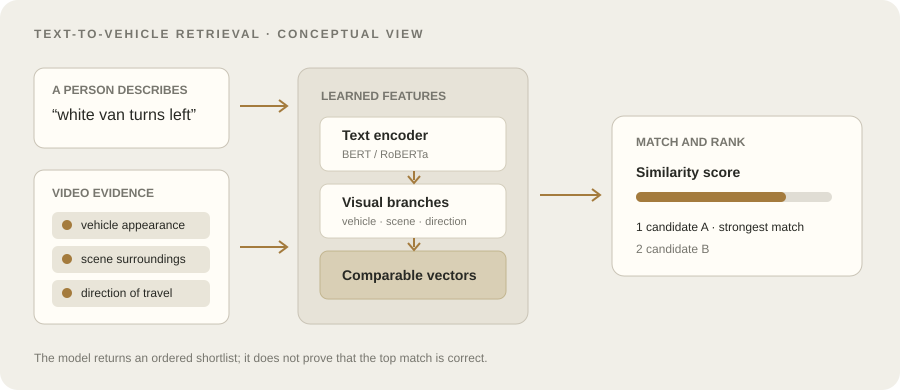

Problem
Imagine an operator sees a white vehicle turn left beside a bus, then needs to find it in hours of traffic footage. A useful search system has to connect that sentence to the right vehicle track, even when the wording is informal and the camera view contains many similar cars.
This task is more demanding than classifying an image as “car” or “truck.” The description can refer to the vehicle’s color and type, its direction, nearby vehicles, or the scene around it. The same vehicle also changes appearance as it moves through the frame. The paper studies retrieval from a single-view video: given a written description, rank the candidate vehicle tracks so the intended one appears near the top.
Approach
The authors first prepare the video as two kinds of visual input: frames from the full scene, which preserve context, and cropped vehicle images, which focus on the target. They pair these with the natural-language descriptions associated with each track.
The model then learns a shared representation through two branches:
- Text branch: BERT or RoBERTa turns the description into a 768-value representation, which the model projects to 256 values.
- Visual branch: one sub-branch encodes the full scene, another encodes the cropped vehicle, and a bidirectional LSTM encodes its trajectory or direction. Their 512-, 512-, and 128-value features are combined and projected to 256 values.
During training, bidirectional contrastive losses teach the text and visual representations to agree for a matching track and differ for other tracks. At search time, the model compares a description with candidate vehicle representations using cosine similarity, then sorts candidates by score. This lets appearance, context, and motion contribute to a match instead of forcing the system to rely on vehicle color alone.
The paper tests seven combinations of visual and text encoders on CityFlow-NL. The image side includes VGG, ResNet-50, ResNeXt-50, and ViT-B/16 or ViT-B/32; the text side uses BERT or RoBERTa. Training runs for 20 epochs at a learning rate of 1e-5 on a CUDA GPU cluster.
Try the matching flow
Follow a description into a ranked list
Choose a search, then switch off a signal to see what that branch contributes.
Swipe sideways to follow the branches.
All three visual branches are contributing to this illustrative match.
Toy illustration: the points come from a small hand-written matching rule. They are not output from the published model, a real video search, or a confidence score.
Findings
By MRR, the best tested pairing was ViT-B/16 with RoBERTa. It reached MRR 0.1499, Recall@5 20.14%, and Recall@10 31.20%. MRR rewards putting the first correct match high in the ranked list; Recall@5 and Recall@10 ask whether a correct match appears among the first five or ten candidates. The paper reports MRR 0.0269 for the CityFlow-NL baseline. The highest Recall@10 came from a different setup—ViT-B/32 with BERT, at 33.16%—so “best” depends on the retrieval measure being optimized.
The results also show that the choice of encoder matters: the tested vision transformers generally scored above the tested CNNs, and the RoBERTa configurations generally scored above their BERT counterparts. This is evidence about these seven configurations on this benchmark, not a universal rule that transformers always win. The paper does not report inference latency, request capacity, or tests on a new camera network, so its scores do not establish production readiness.
The authors identify back-translation and richer multi-branch text representations as future work. Those ideas target a real weakness of the setup: one short sentence may not fully express a vehicle’s appearance, surroundings, and movement.
Paper
“Multi-branch Deep Neural Model for Natural Language-Based Vehicle Retrieval,” by N. Shankaranarayan and S. Sowmya Kamath. Computer Vision and Machine Intelligence: Proceedings of CVMI 2022, LNNS 586, pp. 603–613, Springer, 6 May 2023.